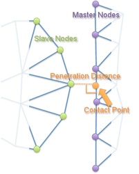

PenetrationLocator
A PenetrationLocator provides the perpendicular distance from a Secondary node to a Primary side and the "contact point" on the Primary side.
The distance returned is negative if penetration hasn't yet occurred and positive if it has.
To get a NearestNodeLocator
#include "PenetrationLocator.h"and callgetPenetrationLocator(primary_id, secondary_id)to create the object.The algorithm in PenetrationLocator utilizes a
NearestNodeLocatorsopatch_sizeis still important.
